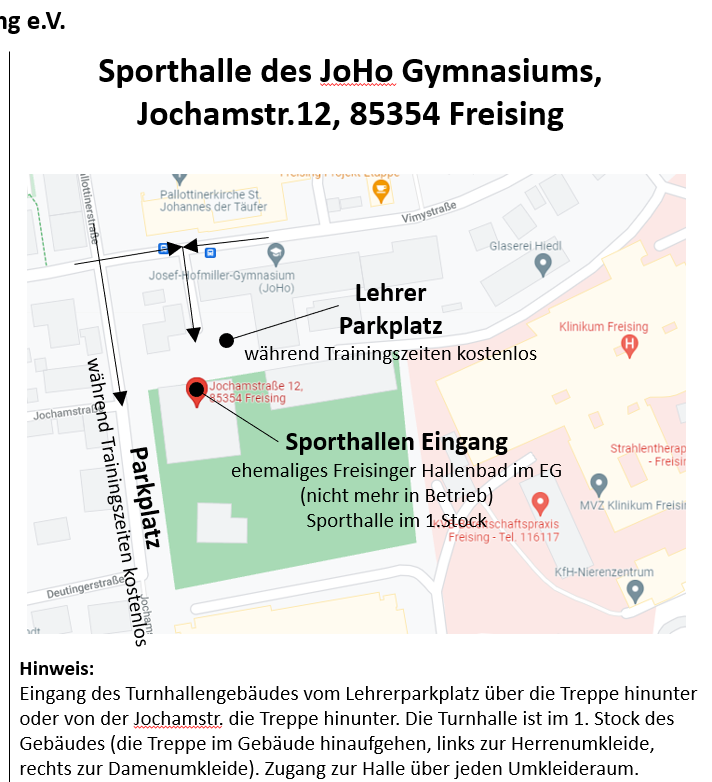
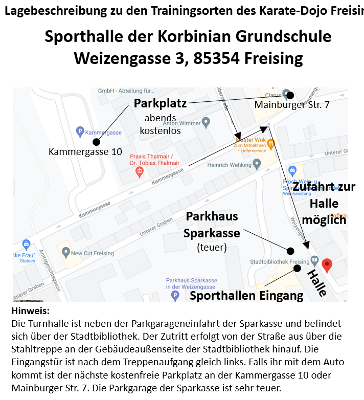

Trainingsorte
Josef-Hofmiller-Gymnasium
Sporthalle · Jochamstraße 12, 85354 Freising


Interaktive Karte anzeigen
Zur Halle
Vom Lehrerparkplatz oder von der Jochamstraße führt eine Treppe hinunter zum Eingang des Turnhallengebäudes. Die Sporthalle liegt im 1. Stock, über dem ehemaligen Hallenbad.
Im Gebäude die Treppe hinauf: links zur Herren-, rechts zur Damenumkleide. Die Halle ist über beide Umkleideräume zugänglich.
Parken
Der Lehrerparkplatz und die im Lageplan markierten Stellplätze können während der Trainingszeiten kostenlos genutzt werden.
Korbinian Grundschule
Sporthalle · Weizengasse 3, 85354 Freising


Interaktive Karte anzeigen
Zur Halle
Die Turnhalle befindet sich über der Stadtbibliothek, neben der Parkgarageneinfahrt der Sparkasse. Von der Straße führt eine Stahltreppe an der Außenseite des Gebäudes hinauf. Die Eingangstür liegt gleich links nach dem Treppenaufgang.
Parken
Die nächsten abends kostenlosen Parkplätze liegen an der Kammergasse 10 und der Mainburger Straße 7. Die Sparkassen-Parkgarage in der Weizengasse ist kostenpflichtig.